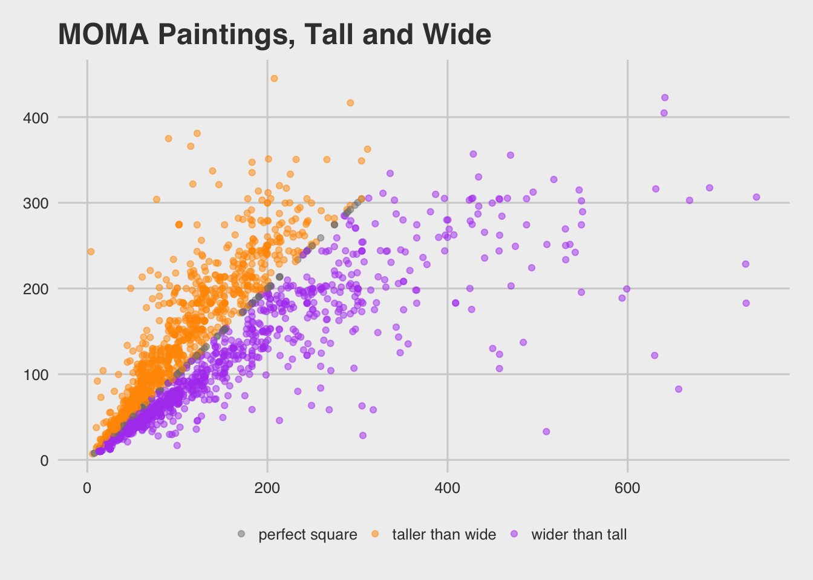
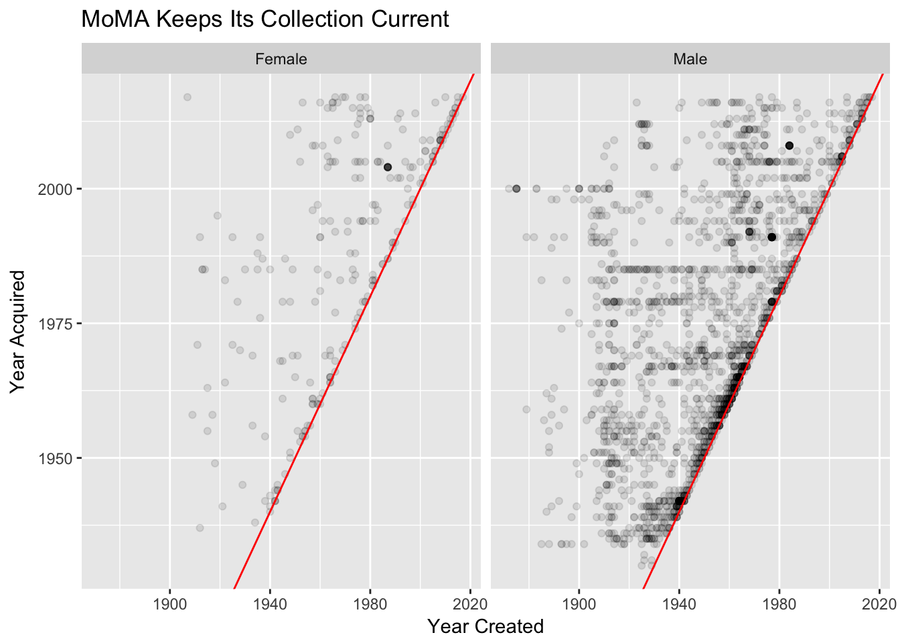
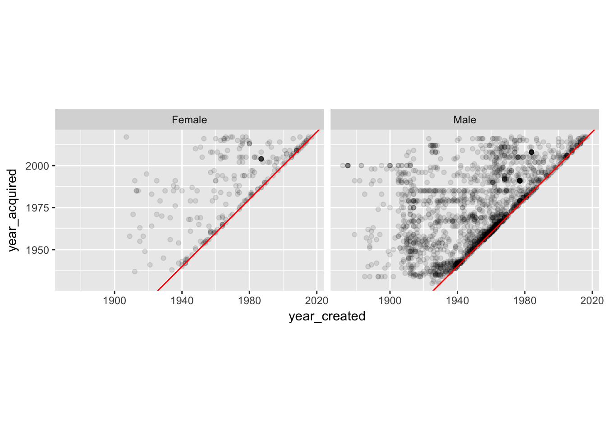

Lab 02: MOMA Museum Tour
CS631
Alison Hill
1 Goals for Lab 02
2 Inspiration + data
https://fivethirtyeight.com/features/a-nerds-guide-to-the-2229-paintings-at-moma/
https://github.com/MuseumofModernArt/collection
https://medium.com/@foe/here-s-a-roundup-of-how-people-have-used-our-data-so-far-80862e4ce220
3 Packages needed
library(here) # to set file path if working from local file
library(tidyverse) # readr, tidyr, ggplot2, dplyr4 Read in the data
Note! This is not the original data- I did a lot of cleaning and decision-making in the pre-processing. The below contains only paintings and drawings in the MOMA collection.
Use this code chunk to read in the data available at http://bit.ly/cs631-moma:
library(readr)
moma <- read_csv("http://bit.ly/cs631-moma")I called my cleaned data artworks-cleaned.csv, and stored it in a folder called data. You can use this code if you want to read in the local CSV file.
library(here)
library(readr)
library(dplyr)
moma <- read_csv(here::here("data", "artworks-cleaned.csv"))5 Challenge 1: Know your data
5.1 How many paintings?
- How many rows/observations are in
moma? - How many variables are in
moma?
These questions can be answered using the dplyr function glimpse.
library(dplyr)
moma# A tibble: 2,253 x 23
title artist artist_bio artist_birth_ye… artist_death_ye… num_artists
<chr> <chr> <chr> <dbl> <dbl> <dbl>
1 Rope … Joan M… (Spanish,… 1893. 1983. 1.
2 Fire … Paul K… (German, … 1879. 1940. 1.
3 Portr… Paul K… (German, … 1879. 1940. 1.
4 Guitar Pablo … (Spanish,… 1881. 1973. 1.
5 Grand… Arthur… (American… 1880. 1946. 1.
6 "\"M'… Franci… (French, … 1879. 1953. 1.
7 Untit… Blinky… (German, … 1943. 1977. 1.
8 Dayli… Pierre… (French, … 1880. 1950. 1.
9 The B… Paul C… (French, … 1839. 1906. 1.
10 Synth… Enrico… (Italian,… 1894. 1956. 1.
# ... with 2,243 more rows, and 17 more variables: n_female_artists <dbl>,
# n_male_artists <dbl>, artist_gender <chr>, year_acquired <dbl>,
# year_created <dbl>, circumference_cm <lgl>, depth_cm <dbl>,
# diameter_cm <lgl>, height_cm <dbl>, length_cm <lgl>, width_cm <dbl>,
# seat_height_cm <lgl>, purchase <lgl>, gift <lgl>, exchange <lgl>,
# classification <chr>, department <chr>glimpse(moma)Observations: 2,253
Variables: 23
$ title <chr> "Rope and People, I", "Fire in the Evening",...
$ artist <chr> "Joan Miró", "Paul Klee", "Paul Klee", "Pabl...
$ artist_bio <chr> "(Spanish, 1893–1983)", "(German, born Switz...
$ artist_birth_year <dbl> 1893, 1879, 1879, 1881, 1880, 1879, 1943, 18...
$ artist_death_year <dbl> 1983, 1940, 1940, 1973, 1946, 1953, 1977, 19...
$ num_artists <dbl> 1, 1, 1, 1, 1, 1, 1, 1, 1, 1, 1, 1, 1, 1, 1,...
$ n_female_artists <dbl> 0, 0, 0, 0, 0, 0, 0, 0, 0, 0, 0, 0, 0, 0, 0,...
$ n_male_artists <dbl> 1, 1, 1, 1, 1, 1, 1, 1, 1, 1, 1, 1, 1, 1, 1,...
$ artist_gender <chr> "Male", "Male", "Male", "Male", "Male", "Mal...
$ year_acquired <dbl> 1936, 1970, 1966, 1955, 1939, 1968, 1997, 19...
$ year_created <dbl> 1935, 1929, 1927, 1919, 1925, 1919, 1970, 19...
$ circumference_cm <lgl> NA, NA, NA, NA, NA, NA, NA, NA, NA, NA, NA, ...
$ depth_cm <dbl> NA, NA, NA, NA, NA, NA, NA, NA, NA, NA, NA, ...
$ diameter_cm <lgl> NA, NA, NA, NA, NA, NA, NA, NA, NA, NA, NA, ...
$ height_cm <dbl> 104.8, 33.8, 60.3, 215.9, 50.8, 129.2, 200.0...
$ length_cm <lgl> NA, NA, NA, NA, NA, NA, NA, NA, NA, NA, NA, ...
$ width_cm <dbl> 74.6, 33.3, 36.8, 78.7, 54.0, 89.9, 200.0, 3...
$ seat_height_cm <lgl> NA, NA, NA, NA, NA, NA, NA, NA, NA, NA, NA, ...
$ purchase <lgl> FALSE, FALSE, FALSE, FALSE, FALSE, FALSE, FA...
$ gift <lgl> TRUE, FALSE, FALSE, TRUE, TRUE, FALSE, TRUE,...
$ exchange <lgl> FALSE, FALSE, FALSE, FALSE, TRUE, FALSE, FAL...
$ classification <chr> "Painting", "Painting", "Painting", "Paintin...
$ department <chr> "Painting & Sculpture", "Painting & Sculptur...There are 2253 paintings in moma.
5.2 What is the earliest painting acquired?
- What is the earliest painting ever acquired by MOMA?
- Which year?
- Which artist?
- What title?
These questions can be answered by combining two dplyr functions: select and arrange.
moma %>%
select(artist, title, year_acquired) %>%
arrange(year_acquired)# A tibble: 2,253 x 3
artist title year_acquired
<chr> <chr> <dbl>
1 Edward Hopper House by the Railroad 1930.
2 Bernard Karfiol Seated Nude 1930.
3 Pierre Roy Daylight Savings Time 1931.
4 Preston Dickinson Plums on a Plate 1931.
5 Otto Dix Dr. Mayer-Hermann 1932.
6 Paul Cézanne The Bather 1934.
7 Paul Cézanne Pines and Rocks (Fontainebleau?) 1934.
8 Paul Cézanne Still Life with Ginger Jar, Sugar Bowl… 1934.
9 Paul Cézanne Still Life with Apples 1934.
10 Arthur B. Davies Italian Landscape 1934.
# ... with 2,243 more rows5.3 What is the earliest painting created (oldest)?
- What is the earliest painting ever created in the MOMA collection historically (oldest painting)?
- Which year?
- Which artist?
- What title?
These questions can be answered by combining two dplyr functions: select and arrange.
moma %>%
select(artist, title, year_created) %>%
arrange(year_created)# A tibble: 2,253 x 3
artist title year_created
<chr> <chr> <dbl>
1 Odilon Redon Landscape at Daybreak 1872.
2 Odilon Redon Apache (Man on Horseback) 1875.
3 Odilon Redon Apache (Man on Horseback II) 1875.
4 Odilon Redon Fishing Boat 1875.
5 Odilon Redon Rocky Peak 1875.
6 Odilon Redon The Rocky Slope 1875.
7 Odilon Redon Landscape with Rocks, near Royan 1875.
8 Paul Cézanne Still Life with Fruit Dish 1879.
9 Paul Cézanne L'Estaque 1879.
10 Claude Monet On the Cliff at Pourville, Clear Weather 1882.
# ... with 2,243 more rowsTo do inline comments, I could say that the oldest painting is Landscape at Daybreak, painted by Odilon Redon in 1872.
5.4 How many artists?
- How many distinct artists are there?
Try dplyr::distinct.
moma %>%
distinct(artist)# A tibble: 989 x 1
artist
<chr>
1 Joan Miró
2 Paul Klee
3 Pablo Picasso
4 Arthur Dove
5 Francis Picabia
6 Blinky Palermo
7 Pierre Roy
8 Paul Cézanne
9 Enrico Prampolini
10 Jankel Adler
# ... with 979 more rows5.5 How many paintings per artist?
- Which artist has the most paintings ever owned by
moma? - How many were there by that artist?
Try dplyr::count. Use ?count to figure out how to sort the output.
moma %>%
count(artist, sort = TRUE)# A tibble: 989 x 2
artist n
<chr> <int>
1 Pablo Picasso 55
2 Henri Matisse 32
3 On Kawara 32
4 Jacob Lawrence 30
5 Batiste Madalena 25
6 Jean Dubuffet 25
7 Odilon Redon 25
8 Ben Vautier 24
9 Frank Stella 23
10 Philip Guston 23
# ... with 979 more rows5.6 In what year were the most paintings acquired?
Try dplyr::count. Use ?count to figure out how to sort the output.
moma %>%
count(year_acquired, sort = TRUE)# A tibble: 88 x 2
year_acquired n
<dbl> <int>
1 1985. 86
2 1942. 71
3 1979. 71
4 1991. 67
5 2005. 67
6 1967. 65
7 2008. 55
8 1961. 45
9 1969. 45
10 1956. 42
# ... with 78 more rows5.7 In what year were the most paintings created?
Try dplyr::count. Use ?count to figure out how to sort the output.
moma %>%
count(year_created, sort = TRUE)# A tibble: 139 x 2
year_created n
<dbl> <int>
1 1977. 57
2 1940. 56
3 1964. 56
4 1961. 50
5 1962. 49
6 1963. 44
7 1959. 42
8 1968. 40
9 1960. 39
10 1914. 37
# ... with 129 more rows5.8 What about first painting by a solo female artist?
Try combining three dplyr functions: filter, select, and arrange. Try year_acquired and year_created!
moma %>%
filter(num_artists == 1 & n_female_artists == 1) %>%
select(title, artist, year_acquired, year_created) %>%
arrange(year_acquired)# A tibble: 252 x 4
title artist year_acquired year_created
<chr> <chr> <dbl> <dbl>
1 Landscape, 47 Natalia Gon… 1937. 1912.
2 Shack Loren MacIv… 1938. 1934.
3 Hopscotch Loren MacIv… 1940. 1940.
4 Shadows with Painting Irene Rice … 1941. 1940.
5 Figure Varvara Ste… 1941. 1921.
6 Still Life in Red Amelia Pelá… 1942. 1938.
7 White Lines Irene Rice … 1942. 1942.
8 Musical Squash Maud Morgan 1942. 1942.
9 Desolation Raquel Forn… 1942. 1942.
10 Self-Portrait with Cropped Hair Frida Kahlo 1943. 1940.
# ... with 242 more rowsmoma %>%
filter(num_artists == 1 & n_female_artists == 1) %>%
select(title, artist, year_acquired, year_created) %>%
arrange(year_created)# A tibble: 252 x 4
title artist year_acquired year_created
<chr> <chr> <dbl> <dbl>
1 Self-Portrait with Two Flower… Paula Moders… 2017. 1907.
2 Girl with Bare Shoulders Gwen John 1958. 1909.
3 Girl Reading at a Window Gwen John 1971. 1911.
4 Landscape, 47 Natalia Gonc… 1937. 1912.
5 Cubist Nude Alexandra Ex… 1991. 1912.
6 Rayonism, Blue-Green Forest Natalia Gonc… 1985. 1913.
7 The Factory and the Bridge Olga Rozanova 1985. 1913.
8 Subject from a Dyer's Shop Lyubov Popova 1985. 1914.
9 Portuguese Market Sonia Delaun… 1955. 1915.
10 Girl with a Blue Scarf Gwen John 1963. 1915.
# ... with 242 more rows# or, because artist_gender is missing when num_artists > 1
moma %>%
filter(artist_gender == "Female") %>%
select(title, artist, year_acquired, year_created) %>%
arrange(year_acquired)6 Challenge 2: On paper first!
7 Challenge 3: Plot your data
From fivethirtyeight. Let’s recreate this plot (mostly)!

7.1 Plot year painted vs year acquired
Things to consider:
- You’ll want to play around with setting an
alphavalue here- keep in mind that0is totally transparent and1is opaque. - Try using
geom_abline()to add the line in red. - Go back to Lab 01 to review how to do the following:
- Change the x- and y-axis labels and the plot title to match the plot above
ggplot(moma, aes(year_created, year_acquired)) +
geom_point(alpha = .1, na.rm = TRUE) +
geom_abline(intercept = c(0,0), colour = "red") +
labs(x = "Year Created", y = "Year Acquired") +
ggtitle("MOMA Keeps Its Collection Current") 
7.2 Facet by artist gender
Can you make the same plot above, but facet by artist gender? For this to make sense, you probably want to do some filtering to select only those paintings where there was one “solo” artist.
moma_solo <- moma %>%
filter(num_artists == 1)
ggplot(moma_solo, aes(year_created, year_acquired)) +
geom_point(alpha = .1) +
geom_abline(intercept = c(0,0), colour = "red") +
labs(x = "Year Created", y = "Year Acquired") +
ggtitle("MOMA Keeps Its Collection Current") +
facet_wrap(~artist_gender)
8 Challenge 4: Plot painting dimensions
Let’s (somewhat) try to recreate this scatterplot from fivethirtyeight.

To recreate, some things to consider:
- Try filtering all paintings with height less than 600 cm and width less than 760 cm.
- If you want to add color as in the original, you’ll need to create a new variable using
mutate. - You’ll probably also want to look into
case_when.
moma_dim <- moma %>%
filter(height_cm < 600, width_cm < 760) %>%
mutate(hw_ratio = height_cm / width_cm,
hw_cat = case_when(
hw_ratio > 1 ~ "taller than wide",
hw_ratio < 1 ~ "wider than tall",
hw_ratio == 1 ~ "perfect square"
))
library(ggthemes)
ggplot(moma_dim, aes(x = width_cm, y = height_cm, colour = hw_cat)) +
geom_point(alpha = .5) +
ggtitle("MOMA Paintings, Tall and Wide") +
scale_colour_manual(name = "",
values = c("gray50", "#FF9900", "#B14CF0")) +
theme_fivethirtyeight() +
theme(axis.title = element_text()) +
labs(x = "Width", y = "Height") 